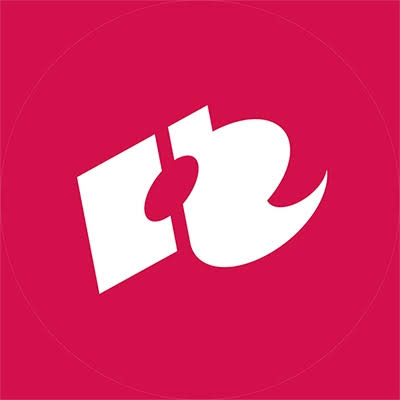

HR CMGT • Lesson 10: Game Architecture 2 •
Modern Unity 6
0
Keyboard Shortcuts
×
→ / Space
Next Slide
←
Previous Slide
F
Toggle Fullscreen
L
Toggle Lecture / Lab Mode
N
Speaker Notes
?
Show / Hide this Help
Esc
Close Dialogs
Speaker Notes [N]
×